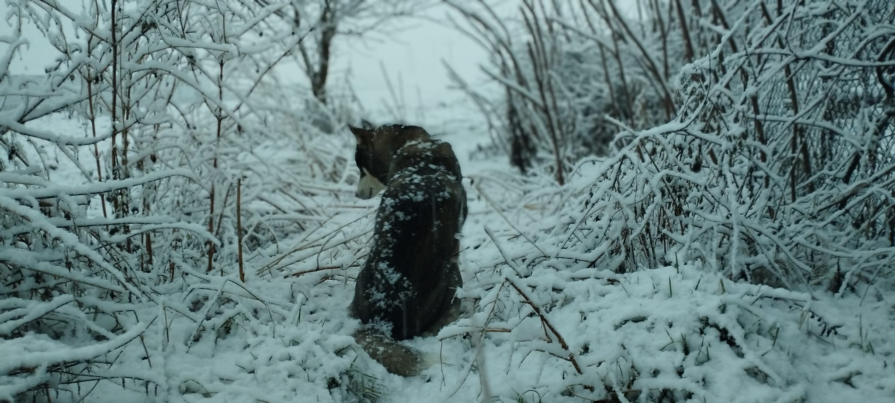

{kind=link}
{kind=link}
{kind=link}
{kind=link}
{kind=link}
{kind=link}
Koncepcja
Ustalamy nastrój sesji, miejsce, styl i cel zdjęć.
Uchwycone chwile
Kadry pełne światła, nastroju i autentyczności. Tworzę fotografie, które opowiadają historie — od subtelnych portretów po ujęcia natury, detali i ważnych wydarzeń.
Zobacz kadry
O fotografii
Fotografia pozwala zatrzymać to, co często trwa tylko sekundę — gest, spojrzenie, światło na twarzy albo atmosferę miejsca. W pracy łączę kreatywne spojrzenie z techniczną precyzją, aby każdy kadr miał własny charakter i opowiadał coś więcej niż tylko to, co widać na pierwszy rzut oka.
Portfolio
Przegląd kadrów z plenerów, portretów, detali natury i projektów artystycznych.
Proces
Od pierwszego pomysłu po finalną selekcję zdjęć — każdy etap wpływa na klimat całej opowieści.
Ustalamy nastrój sesji, miejsce, styl i cel zdjęć.
Wybieram ujęcia, które najlepiej oddają emocje i atmosferę chwili.
Wybieram najmocniejsze fotografie — te, które mają charakter i historię.
Subtelna edycja koloru, kontrastu i detalu wzmacnia finalny klimat zdjęć.
Oferta
Wybierz charakter sesji, który najlepiej pasuje do Twojej historii.

Unikalne sesje ukazujące osobowość, emocje i indywidualny charakter.

Natura jako tło dla historii — światło, przestrzeń i naturalna atmosfera.

Najważniejsze momenty wydarzenia uchwycone w estetyczny, naturalny sposób.

Ciepłe i naturalne ujęcia, które zatrzymują ważne wspomnienia na lata.
Umów sesję
Marzysz o profesjonalnej sesji, która pokaże prawdziwe emocje? A może chcesz uwiecznić ważne wydarzenie? Wspólnie przygotujemy koncepcję i zadbamy o każdy detal.
Umów się na sesję